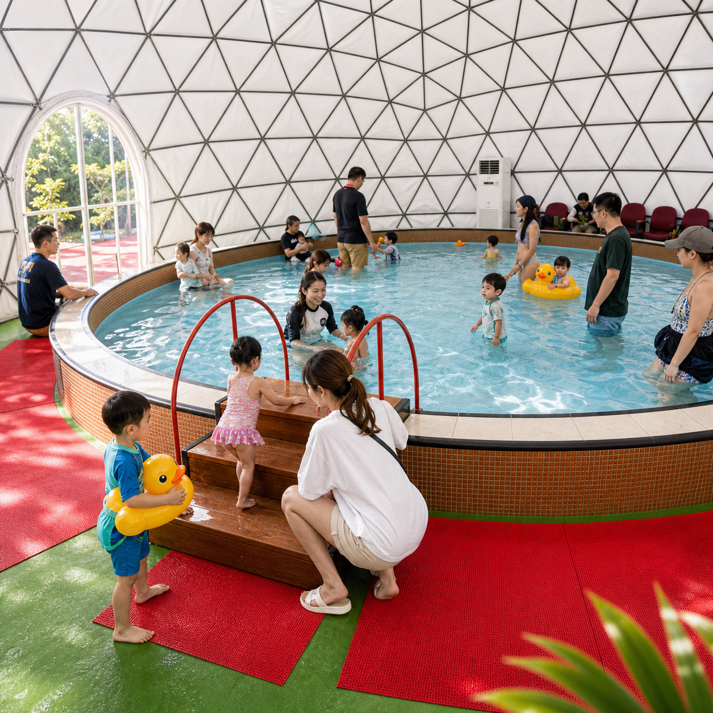
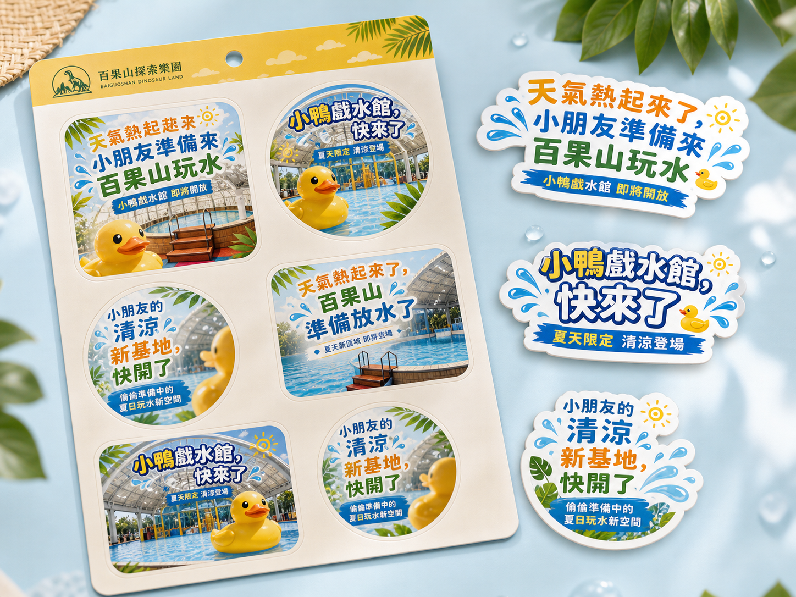
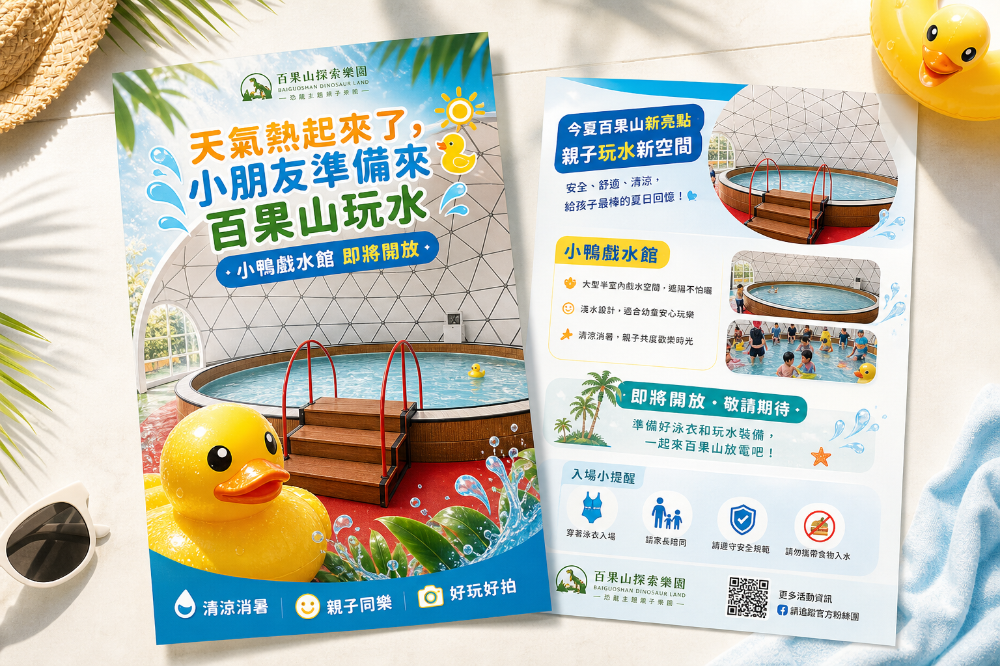
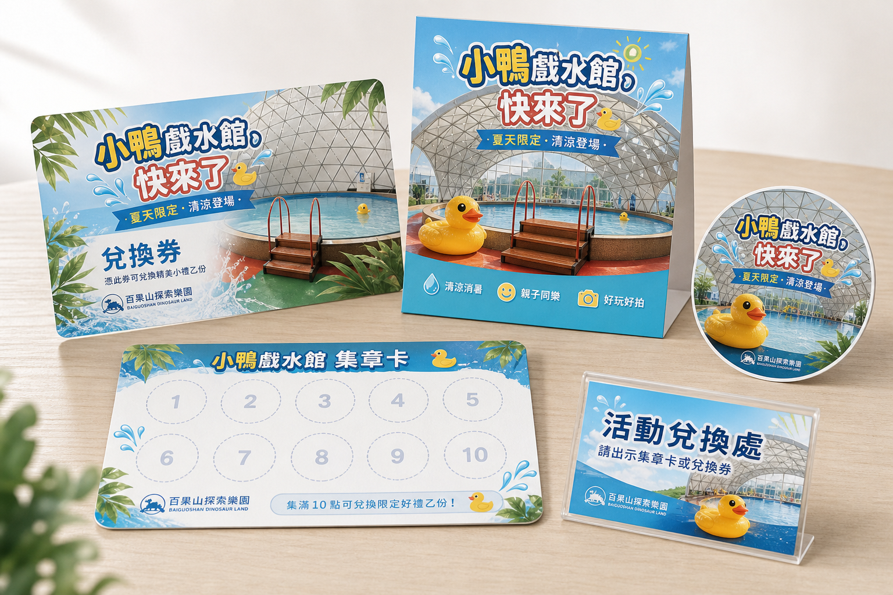

Duck Water Play Launch
小鴨戲水館開放企劃
本次企劃將小鴨戲水館定位為「夏季清涼親子戲水點」， 以清楚的活動主題、容易執行的現場機制與可延續的社群內容， 讓它成為暑假前最具辨識度的夏季亮點之一。
本次企劃將小鴨戲水館定位為「夏季清涼親子戲水點」， 以清楚的活動主題、容易執行的現場機制與可延續的社群內容， 讓它成為暑假前最具辨識度的夏季亮點之一。
本次對外包裝將以「夏季消暑、親子停留、玩水放電」為核心，讓家長一眼就知道這個空間適合什麼樣的家庭與玩法。
百果山夏日戲水計畫
可作為整體夏季活動主軸，後續也能延伸到暑期內容與週末檔期運用。
小鴨戲水館開放啦
保留既有命名，讓現場與社群溝通一致，也更適合用在貼文與活動文案中。
活動機制將以現場執行清楚、家長容易理解為優先，再視後續反應延伸為暑期系列內容。
活動期間遊玩指定內容，即可兌換限量小鴨乙隻，作為本次活動最直接的記憶點。
現場拍照打卡或完成指定互動，即可兌換限量小禮，適合作為後續社群延伸機制。
若整體回饋良好，可進一步擴成整段暑期的戲水主題內容線。
整體溝通節奏將分成預熱、正式開放與持續擴散三個階段，讓聲量與體驗感能逐步堆疊。
第一波內容將以清楚建立印象為主，先讓家長知道新空間即將登場，再逐步帶出開放與活動訊息。
天氣熱起來了，小朋友準備來百果山玩水
先建立夏季情境，讓家長知道百果山即將有新的戲水內容。
小鴨戲水館即將開放
正式帶出名稱，開始建立小鴨戲水館的辨識度。
百果山夏日戲水計畫正式啟動
明確告知正式開放，作為主公告貼文使用。
來玩再送限量小鴨
提高家長帶孩子來園的動機，也增加分享與互動意願。
建議再補一篇「曬出你家寶貝的戲水時刻」，收集家長照片與留言，讓戲水館的聲量不只停在開放當天。
以下四個版本都可作為第一則預熱貼文使用，差異在於語氣與資訊露出程度，可依最終選定素材再收斂成正式版本。
天氣慢慢熱起來了，百果山也準備把夏天最需要的清涼感帶進園區。
接下來，我們即將迎來一個很適合親子家庭的新空間，讓小朋友可以開心玩水、家長也多一個舒服停留的放電點。
小鴨戲水館，即將開放。
更多開放資訊，我們會再陸續和大家分享，記得先把這則貼文收藏起來。
夏天快到了，小朋友期待的清涼時刻，也準備在百果山登場。
我們正在為親子家庭準備一個新的玩水空間，讓這個夏天不只是來玩，也能多一點舒服、多一點清涼。
小鴨戲水館，快要和大家見面了。
想第一時間知道開放消息，記得持續鎖定粉絲頁。
今年夏天，百果山多了一個新的親子清涼選擇。
小朋友可以玩水放電，家長也能多一個輕鬆停留的地方。
我們即將開放的，就是小鴨戲水館。
正式開放時間與後續活動資訊，接下來會再陸續公告。
當天氣越來越熱，大家對親子出遊的期待，也會多一份「想找個可以清涼一下的地方」。
這個夏天，百果山準備了一個新的戲水空間，讓親子家庭在園區裡，也能留下更輕鬆、更舒服的夏日回憶。
小鴨戲水館，即將開放。
如果你也正在安排夏天的親子行程，這一站可以先收藏起來。
以下畫面用來呈現活動當天的整體氛圍想像，讓現場視覺、親子互動與活動記憶點更容易具體對焦。

畫面方向以真實半球場館結構為基礎，加入親子玩水互動與少量小鴨識別元素，整體呈現清爽、明亮、適合拍照分享的夏季氛圍。
這些物料將協助活動當天的辨識、兌換、打卡與現場呈現更完整，也讓家長拍照時更容易留下記憶點。

可作為入場小禮、打卡贈品或活動紀念，辨識度高，也最容易快速上線。

適合放在售票處、服務台或入口桌面，用來清楚呈現活動主軸、亮點與簡單玩法。

適合搭配送小鴨、打卡換禮或現場識別流程使用，讓活動執行更完整，也降低現場口頭說明成本。
為了讓小鴨戲水館在現場呈現上更完整，建議補充基本識別元素，讓活動名稱、社群視覺與現場體驗更一致。
增設小鴨立牌、入口牌面或活動告示，讓來園家庭更容易辨識。
可加入手拿牌、浮球或拍照小物，增加記憶點與拍照分享效果。
贈品兌換處與活動資訊需清楚可見，方便家長快速理解與參與。
讓社群上的名稱與現場看到的內容有一致對應，整體感受會更完整。
以下項目確認後，後續貼文、視覺與現場執行內容即可往下推進。